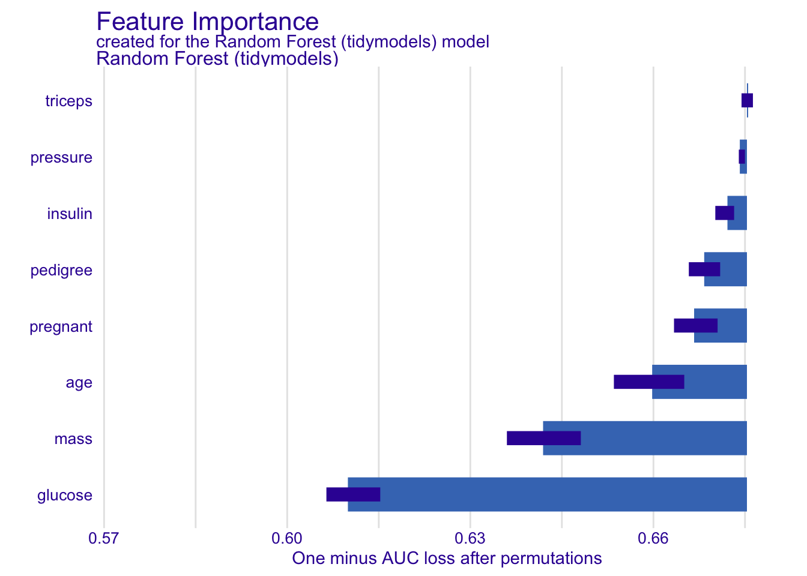
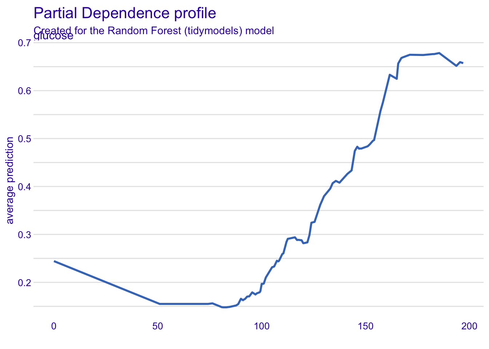
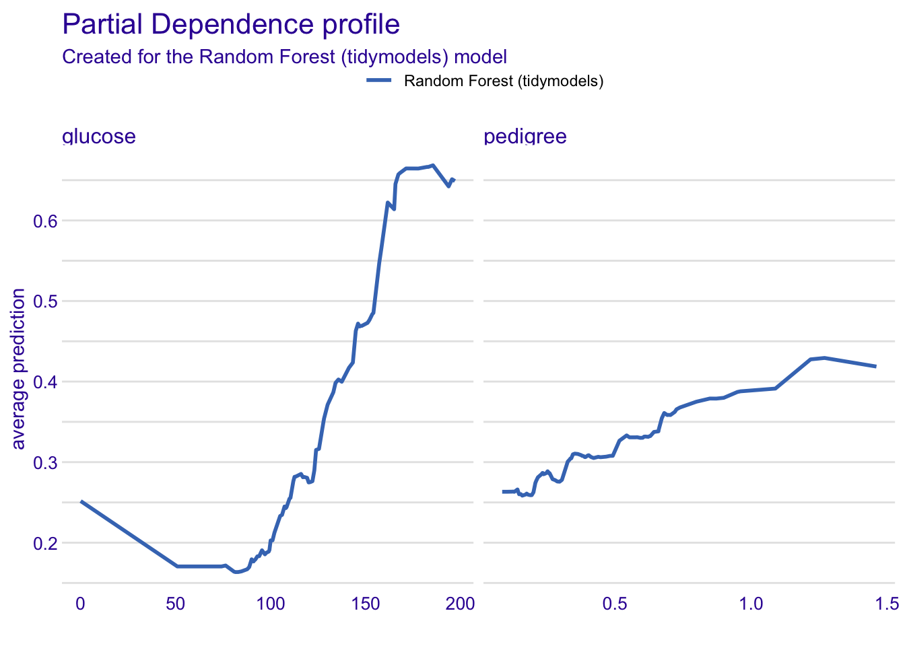
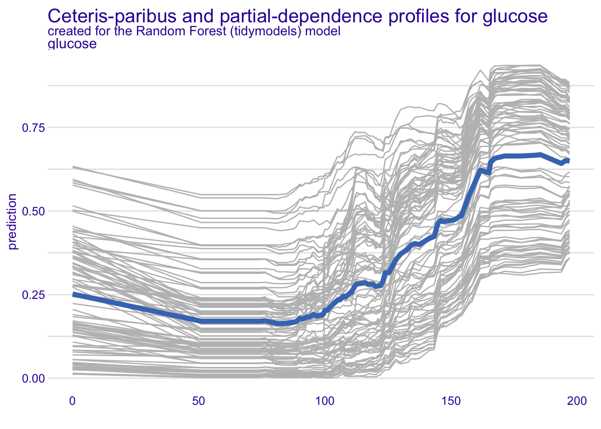
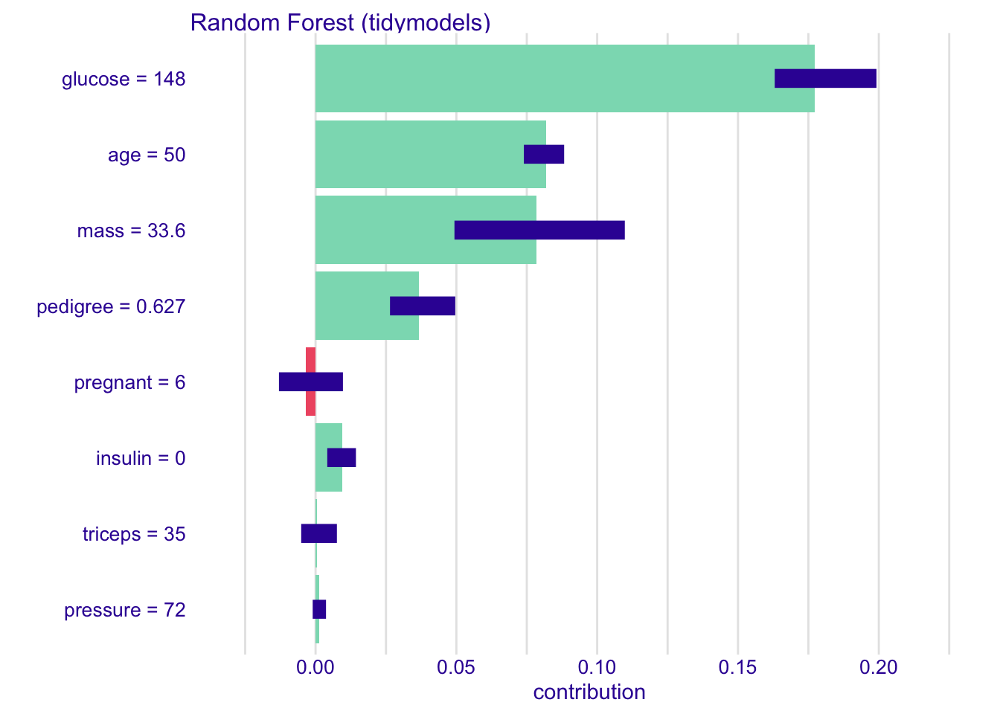
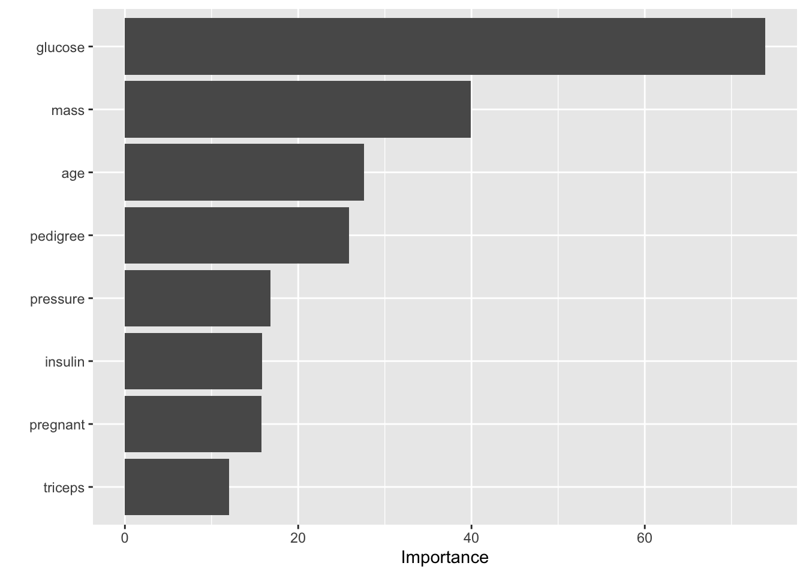

# Install required packages
#install.packages(c("tidymodels", "mlbench", "DALEX", "DALEXtra", "modelStudio"))Explainable AI
You are going to see the power of the DALEX package https://github.com/ModelOriented/DALEX, where the methods seen in class AND MORE, are encoded.
First, make sure you have the packages installed:
Now load them into our session:
Warning: package 'ggplot2' was built under R version 4.5.2Now we are going to fit a random forest model (black box) on our well known PimaIndiansDiabetes dataset. We want to predict diabetes, so we are building a classification predictive model.
Classic train test split:
set.seed(123)
data_split <- initial_split(PimaIndiansDiabetes, prop = 0.8)
train_data <- training(data_split)
test_data <- testing(data_split)Pre-processing
# Define recipe and model
diabetes_recipe <- recipe(diabetes ~ ., data = train_data) %>%
step_normalize(all_numeric()) Model fitting (no hyperparameter tuning here)
rf_model <- rand_forest(mtry = 3, trees = 500, min_n = 10) %>%
set_engine("ranger") %>%
set_mode("classification")
# Create and fit workflow
rf_workflow <- workflow() %>%
add_recipe(diabetes_recipe) %>%
add_model(rf_model)
rf_fit <- fit(rf_workflow, data = train_data)Evaluate model on test set
rf_predictions <- predict(rf_fit, new_data = test_data, type = "prob") %>%
bind_cols(predict(rf_fit, new_data = test_data)) %>%
bind_cols(test_data)
metrics <- rf_predictions %>%
metrics(truth = diabetes, estimate = .pred_class)
print(metrics)# A tibble: 2 × 3
.metric .estimator .estimate
<chr> <chr> <dbl>
1 accuracy binary 0.792
2 kap binary 0.517And now, lets start with XAI. We are going to use the DALEX package. As it is so useful, there is an integration with tidymodels https://www.tmwr.org/explain.html
DALEX Explainer
explainer <- explain_tidymodels(
rf_fit,
data = test_data %>% select(-diabetes),
y = as.numeric(test_data$diabetes),
label = "Random Forest (tidymodels)"
)Preparation of a new explainer is initiated
-> model label : Random Forest (tidymodels)
-> data : 154 rows 8 cols
-> target variable : 154 values
-> predict function : yhat.workflow will be used ( default )
-> predicted values : No value for predict function target column. ( default )
-> model_info : package tidymodels , ver. 1.4.1 , task classification ( default )
-> predicted values : numerical, min = 0.002366667 , mean = 0.3276443 , max = 0.8845706
-> residual function : difference between y and yhat ( default )
-> residuals : numerical, min = 0.1509468 , mean = 1.010018 , max = 1.906288
A new explainer has been created! Now that we have fit the explainer, we can ask for specific methods to be assessed. For instance:
Feature Importance: global
plot(model_parts(explainer))Warning: Using `size` aesthetic for lines was deprecated in ggplot2 3.4.0.
ℹ Please use `linewidth` instead.
ℹ The deprecated feature was likely used in the ingredients package.
Please report the issue at
<https://github.com/ModelOriented/ingredients/issues>.
Partial Dependence Plots
plot(model_profile(explainer, variable = "glucose", type = "partial"))
glucose <- model_profile(explainer, variable = "glucose", type = "partial")
pedigree <- model_profile(explainer, variable = "pedigree", type = "partial")
plot(glucose, pedigree)Warning: `aes_string()` was deprecated in ggplot2 3.0.0.
ℹ Please use tidy evaluation idioms with `aes()`.
ℹ See also `vignette("ggplot2-in-packages")` for more information.
ℹ The deprecated feature was likely used in the ingredients package.
Please report the issue at
<https://github.com/ModelOriented/ingredients/issues>.
Partial Dependence plots with ICE!
plot(glucose, geom = "profiles") +
ggtitle("Ceteris-paribus and partial-dependence profiles for glucose") 
We can also look at local explanations by picking a single observation. In this case we are wanting to understand the prediction for this single observation through SHAPLEY values.
The specific observation is:
pregnant glucose pressure triceps insulin mass pedigree age
1 6 148 72 35 0 33.6 0.627 50Shapley:
new_observation <- test_data[1, -ncol(test_data)]
local_explanation <- predict_parts(explainer, new_observation, type = "shap")
plot(local_explanation)
Want everything together? Try this out! A summary of everything!
#modelStudio(explainer)But we also have other packages. For example here we can find global variable importance taking advantage of the out of bag (OOB) error we can calculate in random forest (model specific approach)
Attaching package: 'vip'The following object is masked from 'package:DALEX':
titanicThe following object is masked from 'package:utils':
viLets refit the model, but with importance = "impurity") in set_engine
# Define recipe and model
diabetes_recipe <- recipe(diabetes ~ ., data = train_data) %>%
step_normalize(all_numeric())
rf_model <- rand_forest(mtry = 3, trees = 500, min_n = 10) %>%
set_engine("ranger", importance = "impurity") %>%
set_mode("classification")
# Create and fit workflow
rf_workflow <- workflow() %>%
add_recipe(diabetes_recipe) %>%
add_model(rf_model)
rf_fit <- fit(rf_workflow, data = train_data)rf_model_fitted <- extract_fit_parsnip(rf_fit)$fit
# Use vip to plot variable importance
vip(rf_model_fitted, num_features = 10)
Now uncomment the ModelStudio chunk and see what happens. Be sure to check this out too https://arena.drwhy.ai/?app And for python DALEX is also available: https://arena.drwhy.ai/docs/guide/installation